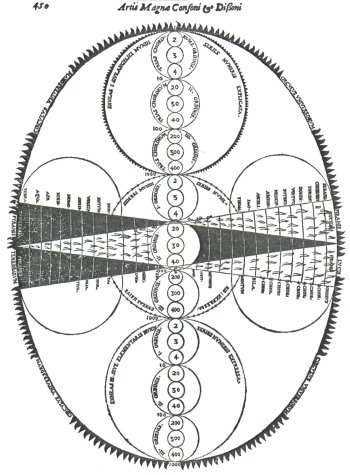
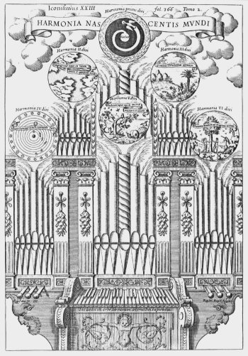
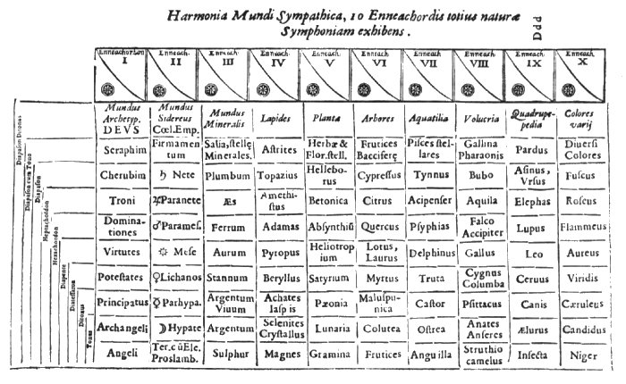

Inhoudsopgave
Musurgia Universalis Inhoudsopgave
Musurgia Universalis  De musica mundana De musica mundana
Liber X. Decachordon naturae
In het laatste boek, dat zeker het hoogtepunt van de
‘Musurgia Universalis’ genoemd mag worden, verwoordt Kircher de
zojuist geschetste driedeling van de wereld, waarbinnen alles in een
ononderbroken verbinding met God staat in het negende hoofdstuk (van het tiende
boek), getiteld Registrum IX. Musica Angelica. (‘Het negende
register. Engelenmuziek.’ - over de betekenis van het woord
‘register’, zie onder).

afb. 30 ‘Circulus universorum' MU II, p.
450 | | Halverwege(1) dit
negende ‘register’ spreekt Kircher over de uitnemendheid van de
tetraktys die totius vniversi Symbolum, een ‘symbool van
het gehele universum’ is.(2) Uit
de vier getallen (1, 2, 3, en 4), die de tetraktys vormen, is het
universum opgebouwd (zie afbeelding 30), en door deze getallen worden ook God,
Natuur (of Wereld) en Mens met elkaar verbonden.
De afbeelding bevat een aantal cirkels en representeert
de wereld: de omringende cirkel is de circulus vniversorum, binnen deze
cirkel bevinden zich de drie werelden, namelijk die der engelen, de
sterrenhemel en de aarde; buiten de cirkel bevindt zich God.(3)
De drie werelden binnen het universum worden eveneens
weergegeven door middel van cirkels: van boven naar beneden drie cirkels,
waarbinnen drie maal drie cirkels zijn weergegeven, en van links naar rechts
een cirkel en twee ovalen (dit geheel moet echter wel op elkaar geprojecteerd
geinterpreteerd worden, maar voor de leesbaarheid zijn zij een kwartslag ten
opzichte van elkaar gedraaid). De drie werelden zijn gelijk van structuur,
hoewel elk op een verschillende trede staat, en ook binnen de werelden bestaat
een hiërarchie (hetgeen uitgedrukt wordt door de tien- en honderdvouden
van de getallen 1, 2, 3, en 4, die de drie maal drie cirkels samenstellen).
|
De drie cirkels die van rechts naar links lopen, en
waarbinnen zich twee in het midden snijdende driehoeken bevinden - deze
driehoeken ontleende Kircher aan Robert Fludd (zie hoofdstuk 2)(4) - representeren eveneens de
hiërarchie die het Goddelijke met het lagere verbinden: het Goddelijke
licht straalt naar beneden en verleent de mens kennis, andersom streeft de mens
omhoog naar kennis van het goddelijke.(5)
In totaal bevinden zich op de afbeelding 40 cirkels (de
ovalen tellen niet mee), volgens Kircher is het getal 40 het ‘meest
mystieke getal’ (numerus maxime mysticus(6)), een getal dat, zo merkt Kircher op, ook al door Plato
als symbool van de ziel in de Timaeus werd gebruikt.(7) Kircher concludeert als volgt:
‘Je ziet derhalve, hoezeer passend het gehele
universum met drie werelden gemaakt wordt, met negen tientallen, negen
honderdtallen en evenveel duizendtallen, dat alles verdeeld kan worden met de
kleinste begrijpelijke cirkels.’ (Vides igitur, quam apte totum
Vniversum cum triplici mundorum ferie, nouem denariis, nouem centenariis,
totidemque millenariis, omnes minimis circellis comprehendis
distribuatur.(8)).
Buiten het universum (zie afbeelding 30, bovenaan, het
cijfer ‘1’) bevindt zich God, de monas, of unitas,
waarnaar alles streeft en die de negentallen in het universum completeert tot
het tiental.
II
Niet alleen de wereld wordt samengesteld uit de
tetraktys, ook de band tussen God en mens, ‘En dit is die
Heraklitische keten, die alles verbindt; dit is dat tiensnarig instrument van
de ganse Wereld, dat alles in één en dezelfde schoonste harmonie
samenbindt’ (Atque haec est catena illa Heracleotica omnia connectens;
hoc decachordon illud naturae Vniversi, omnia in vnam eandemque pulcherrimam
harmoniam adaptans.(9)), wordt door
de tetraktys gevormd.(10) De
harmonie tussen God en Zijn schepping bestaat in de consonanten die met behulp
van de getallen 1, 2, 3, en 4 gevormd kunnen worden, zie onderstaand schema(11) (een voorstelling die, aardig
genoeg, een sterke overeenkomst vertoont met het ‘driehoeksgetal’
van de tetraktys):
| God
Engelen
Wereld
Mens
1
2
3
4 octaaf
(1:2)
kwint
(2:3)
kwart (3:4)
duodecime
(1:3)
octaaf (2:4)
dubbeloctaaf (1:4) |
Met dit schema toont Kircher hoe hij zich de
verschillende verhoudingen voorstelt: God en zijn engelen verhouden zich als
een octaaf (de engelen zijn immers Hem het meest nabij), verderweg gelegen zijn
de wereld (duodecime) en de mens (dubbeloctaaf). De verhoudingen tussen
engelen, wereld en mens drukken uit dat zij dichter bij elkaar staan. Op deze
wijze ‘klinkt alles samen met God.’ (Omnia cum DEO
consonant.(12)).
III
Zoals uit het voorgaande bleek, heeft het getal 10 voor
Kircher een bijzonder betekenis, zoals ook, hoewel veel minder opvallend, uit
de verschillende titels naar voren komt (‘Musurgia Universalis ... in
X libros digesta; Liber X. Decachordon naturae’).
Het getal 10 is van oudsher een bijzonder getal: enerzijds is dit getal de
som van de getallen 1, 2, 3, en 4, de getallen waaruit de pythagoresche
tetraktys bestond (zie hoofdstuk 2), anderzijds is de Romeinse letter X, die
voor het getal 10 gebruikt wordt qua vorm dezelfde als de Griekse hoofdletter
Χ, chi (de
eerste letter van het Christusmonogram); in het getal 10 wordt de klassieke
pythagoresche leer met de christelijk-middeleeuwse getallensymboliek
verenigd.(13)
Ulf Scharlau merkt dan ook op over het tiental bij Kircher: ‘Die
Zehnzahl gilt Kircher als ein Symbolwert göttlicher
Vollkommenheit’.(14) Vanwege
die volkomenheid is het niet verwonderlijk dat het tiende hoofdstuk van het
tiende boek getiteld is De musica divina seu Choro chororum, qui est
Symphonismus DEI cum Universa natura (‘over de Goddelijke muziek, of
over het koor der koren, hetgeen de symfonie van God met de ganse Wereld
is’).
Dit laatste boek handelt over de meest volkomen muziek, de meest volkomen
harmonie, namelijk ‘Die harmonie Gottes’: de goddelijke harmonie
waarin alles verzoend wordt; God is voor Kircher de uiteindelijk
coincidentia oppositorum(15),
de volkomen verzoening van al wat tegengesteld is. De gehele Musurgia
Universalis is op dit punt gericht, alles wat Kircher behandelt wijst in
feite vooruit naar die goddelijke harmonie en belicht deze, vanuit
verschillende punten - zoals Kircher in feite aan het begin ook al aangekondigd
heeft: ‘hetgeen in het laatste boek uitgebreid behandeld zal
worden’ (in: ‘de divisione et definitione Musicae’).
Uiteindelijk komt Kircher tot de conclusie dat de zoetheid en de
lieflijkheid van de goddelijke muziek onkenbaar is (Incomprehensibilis
dulcedo et suauitas Musicae diuinae.(16)), en dat alle menselijke muziek, hoe volmaakt en
perfect ook, niets anders is dan het gehuil van wilde beesten(17):
‘Alle voorstelbare harmonie en muziek, die de
vindingrijkheid van het menselijk vernuft ooit heeft kunnen bedenken, alle
realiseerbare lieflijkheid en zoetheid van de muziekinstrumenten, alle
uitnemendheid en perfectie van de menselijke stemmen, wat is dit, in
vergelijking tot die allerhoogste en meest verheven muziek, anders dan het
allerdissonantste gekrijs van wilde beesten, het huilen van wolven, het knorren
van varkens?’ (Omnis imaginabilis, quae humani ingenii solertia vnquam
inuenire potuit, harmonia et musica, omnia instrumentorum harmonicorum
conceptibilis suauitas et dulcedo, omnis humanarum vocum excellentia et
perfectio, quid ad supremam illam musicam comparata aliud sunt, quam
dissonantissimus belluarum fremitus, luporum vlulatus, grunnitus
porcorum?(18)).
Toch is de mens de taak gegeven is zich op het hogere te
richten en Hem te loven(19),
‘het lam Gods, die in deze woonplaats van de eeuwigheid èn
muzikant èn instrument èn muziek is ... .’ (Agnus DEI,
qui in hoc aeternitatis domicilio et organaedus et organum et musica est
[...].(20)).
Kircher besluit dit laatste boek dan ook met de woorden: ‘... met de
tiensnarig harp wil ik U psalmzingen, en U in eeuwigheid prijzen en
verheerlijken. Amen.’ (... in decachordo psalterio psallam tibi, teque
in saecula saeculorum laudem et glorificem. Amen. (21)), gelijk de psalmist dicht ‘O God, een nieuw lied
wil ik u zingen, met de tiensnarige harp wil ik U psalmzingen’ (Deus
canticum novum cantabo tibi in psalterio decachordo psallam tibi.(22)).
IV
Tot dusver is nog niet
behandeld welk instrument ‘het tiensnarig instrument’ is. Dit
instrument is een orgel (zie afbeelding 32). Net als bij Robert Fludd wordt de
kosmos weergegeven door een instrument, een instrument dat door diens maker,
God, bespeeld wordt: DEVS Optimus Maximus Organaedo, Mundus organo
comparatur(23) (‘God, de
allerhoogste, met een organist, de wereld met een orgel vergeleken’), de
titel van het eerste hoofdstuk. God is de muzikant van het wereld-concert, van
zowel de musica coelestis, als mundana en humana.
‘Gott hat die Welt geschaffen, damit sie seinen Ruhm verkünde,
so wie sich der in-spirierte, nachschöpferische Mensch das Musikinstrumente
baut und es wieder zum Lob des Schöpfers einsetzt.’(24) De wereld is enkel muziek, hetgeen
ook de titel is, die Kircher aan het tiende boek meegaf:
‘Tiende boek. ‘Tiensnarig natuur-instrument’ of
‘Tienpijpig orgel’. Waarin getoond wordt dat de natuur in alles op
muziek en de harmonische proporties heeft gewezen, en wel zo zeer zelfs, dat de
ganse wereld niets anders is dan de meest perfecte muziek. (Liber X.
Decachordon Naturae sive Organum Decaulum(25) quo Naturam rerum in omnibus ad Musicas et
harmonicas proportiones respexisse, atque adeo Naturam vniversi nil aliud nisi
Musicam perfectissimam esse ostenditur.(26)) | | 
afb. 32 ‘Organum decaulum'
MU II, tussen p. 366 en 367 |
Deze orgel-allegorie(27) verklaart ook de benaming ‘register’ die
Kircher aan elk hoofdstuk in dit tiende boek gaf: in elk hoofdstuk wordt een
bepaald register, een bepaald onderdeel van de schepping behandeld. Kircher
begint dit tiende boek dan ook met de creatie van het orgel, waarbij hij
getrouw het scheppingsverhaal uit Genesis volgt. Kircher vergelijkt God’s
scheppingsdaad met de bouw van een orgel door een handwerksman; zoals deze uit
pijpen, windkanalen, registers, blaasbalgen, windlade en tastatuur een orgel
tot een harmonieus geheel samenvoegt, zo ook schiep God in zes dagen de
wereld.(28)
Het orgel (afbeelding 32) bestaat uit zes registers van elk zeven(29) pijpen; boven elk register bevindt
zich een ‘medaillon’ dat met een afbeelding en het juiste
bijbelcitaat, de zes opeenvolgende scheppingsdagen representeert:
- 1 - De harmonie van de eerste dag (Fiat lux, ‘Er zij
licht’30 - Gen. 1:3) wordt
uitgebeeld door een dubbele cirkel(31) waarbinnen een lichtbrengende duif (die de verbinding
lijkt te leggen met heilige geest als duif in het Nieuwe Testament, vgl. Lucas
3:21-22) vanuit het middelpunt door het duister naar buiten spiraalt: terra
autem erat inanis et vacua et tenebrae super faciem abyssi et spiritus Dei
ferebatur super aquas (‘de aarde nu was woest en ledig, en duisternis
lag op de vloed, en de Geest Gods zweefde over de wateren’).
- 2 - De
harmonie van de tweede dag wordt uitgebeeld door de aanwezigheid van water en
aarde (‘Dat de wateren onder de hemel op één plaats samenvloeien
en het droge tevoorschijn kome’ - Gen. 1:9.(32)).
- 3 - De derde dag wordt verbeeld door de
aanwezigheid van vele gewassen (‘Dat de aarde jong groen
voortbrenge’ - Gen 1:11).
- 4 - Op de vierde dag schiep God de
hemellichamen (‘Dat er lichten zijn aan het uitspansel des hemels’
- Gen 1:14); opvallend is het Ptolemaeisch karakter van de voorstelling in het
medaillon: de aarde in het midden, gevolgd door maan, mercurius, venus, zon,
mars, saturnus, jupiter en de sterren.
- 5 - Ten vijfde dage schiep God
vissen en vogels (‘Dat de wateren wemelen van levende wezens, en dat het
gevogelte vliege langs het uitspansel des hemels - Gen. 1:20).
- 6 - De
zesde dag is de kroon op de schepping: ‘Laat Ons mensen maken naar ons
beeld’ - Gen. 1:26; in het medaillon bevinden Adam en Eva zich onder de
boom van goed en kwaad, met appel, slang en andere beesten (o.a. een
eenhoorn).(33)
Het opschrift luidt: Harmonia nascentis mundi
(‘Harmonie van de wordende wereld’(34)), het onderschrift (oner de toetsen): Sic ludit in
orbe terrarum aeterna Dei sapientia (‘Zo speelt Gods eeuwige wijsheid
in de wereld’ - welk opschrift Gods aanwezigheid symboliseert; Kircher
kon natuurlijk geen afbeelding van God plaatsen). Alle registers zijn
uitgetrokken, met volle kracht blaast de wind(35) door het orgel. Opvallend zijn de 6x3 zwarte toetsen,
in plaats van 2/3/2/3 etc., wederom wijzend op volmaaktheid. Orgel, zowel als
muziek, verbeelden op alle mogelijke wijzen de voortdurende harmonie van, en
in, de schepping.(36)
In het volgende hoofdstuk zal ik Kircher’s opvattingen omtrent de
musica mundana behandelen.
Afbeeldingen

afb. 31
‘Correspondenties' MU II, p. 393
1. Voor een volledige
behandeling van dit boek zie Ulf Scharlau, Athanasius Kircher. p.
133-135 (terug naar tekst)
2. MU. II, p. 448 (terug naar
tekst)
3. Hoewel Rolf Dammann over de
driedeling van de reële wereld opmerkt: ‘Sie sind für die
Weltdeutung des Barock verbindlich’ (Musikbegriff. p. 406) en
consequent over een driedeling spreekt, is er in feite sprake van een
vierdeling: 1 - de archetypische wereld, die als voorbeeld dient voor de drie
‘lagere’ werelden, oftewel de ideeën in de geest van God, de
wereld buiten de circulus universorum (met andere woorden de platonische
ideeënwereld), 2 - de wereld van de engelen, 3 - de sterrenhemel, 4 - de
wereld van de elementen (vuur, lucht, water, aarde: het ondermaanse). Deze
laatste drie hebben elk hun eigen cirkel binnen de circulus universorum.
Zie hierover met name Joscelyn Godwin. ‘Athanasius Kircher and the
Occult’ loc. cit. p. 17-18 (terug naar
tekst)
4. Hetgeen ook door Joscelyn Godwin werd
opgemerkt, zie ‘Athanasius Kircher and the Occult’ loc. cit.
p. 31 (terug naar tekst)
5.
Zie ook Ulf Scharlau, Athanasius Kircher. p. 133-134 (terug naar tekst)
6. MU.
II, p. 451 (terug naar tekst)
7. Ibid. (terug naar tekst)
8. Ibid. (terug naar
tekst)
9. MU. II, p. 452. Met
‘Heraklitisch’ doelt Kircher op de (natuur)filosoof Heraklitus van
Efeze (eind 6de eeuw v.c.), die in zijn werk ‘De natuur’ (slechts
in fragmenten overgeleverd. Editie: H. Diels, Die Fragmente der
Vorsocratiker, griechisch und deutsch. Berlin, 1961. 3 dl. 10de uitg.) net
zoals Kircher de ‘eenheid der tegendelen’ leerde. Kircher schrijft
bijvoorbeeld: ‘indien je derhalve het schema [afbeelding 30] nauwkeurig
geheel en al hebt onderzocht, zul je door de afdaling van de eenheid in de
veelheid, en door de wederopstijging van de veelheid in de eenheid ervaren hoe
in de hoogste hemel alles dat in veelheid is in dezelfde eenheid doorgaat;
namelijk deelbaar in ondeelbaar, donker in licht, samengesteld in eenvoudig,
sterfelijk in onsterfelijk, veranderlijk in onveranderlijk, mogelijk in
reëel, deel in geheel, enzovoorts; de tegenstelde voortgang zul je
terugvinden in de wereld.’ (si igitur schema penitus introspexeris,
experieris per descensum vnitatis in multitudinem, regressumque multitudinis in
vnionem, quomodo in supremo Coelo omnia, quae multitudinis sunt, in ipsam
vnitatem pergant; diuiduum videlicet in indiuiduum, in lucem tenebrae,
compositum in simplex, mortale in immortale, mutabile in immutabile, potentia
in actum, pars in totum, et sic de coeteris; contrarium in mundo processum
reperies. MU. II, p. 453) Heraklitus leerde dat ‘een grote wet of
formule (λόγος) alles bepaalt en verklaart: de tegengestelden zijn een
en iedere realiteit is een synthese van tegengestelden’; Heraclitus
schrijft bijvoorbeeld: ‘Zij (de onwetende mensen) begrijpen niet hoe wat
strijdig is met zichzelf overeenstemt: tegenspannende ineengevoegdheid als van
boog en lier’ of (vergelijk Kircher): ‘weg naar omhoog naar omlaag
een en dezelfde’. (Uit: E. de Strycker, Beknopte geschiedenis van de
antieke filosofie. Kapellen, De Nederlandse Boekhandel/Baarn, Ambo, 1987.
p. 32) (terug naar tekst)
10. De tetraktys is echter niet de enige (wel de belangrijkste)
verbinding: ondergeschikt hieraan (want sommeringen) zijn de zeven, acht, negen
of tiendelingen die Kircher aanwendt. Zie bijvoorbeeld afbeelding 31, waarin in
tien enneachorden (negentallen) de gehele wereld door middel van
verwantschappen met elkaar verbonden wordt: een element uit de ene wereld is
met een element uit een andere verbonden, waaruit de ‘symphonie van de
natuur’ ontstaat. Zie ook Joscelyn Godwin, ‘Athanasius Kircher and
the Occult’ loc. cit. p. 18-21 (terug naar
tekst)
11. MU. II, p. 449; maar zie ook
U. Scharlau, Athanasius Kircher. p. 136 (terug naar
tekst)
12. Ibid., margine. (terug naar tekst)
13. Zie over
klassieke en middeleeuwse getallensymboliek bijvoorbeeld Hermann Abert, Die
Musikanschauung des Mittelalters. Halle a.d. S., Max Niemeyer Verlag, 1905.
p. 115 e.v.; maar ook Ulf Scharlau, Athanasius Kircher. p. 47, 118, en
134 e.v., 139 e.v.; M. Vogel, Die Zahl Sieben in der spekulativen
Musiktheorie. Bonn, 1954., met name hoofdstuk 3 ‘Die Sieben als
kosmische und magische Zahl’ p. 37-49; of Fritz Feldman, ‘Numerorum
Mysteria’ Archiv für Musikwissenschaft 14 (1957): p. 102-129
(terug naar tekst)
14.
Ulf Scharlau, Athanasius Kircher. p. 47, maar zie ook p. 136 (terug naar tekst)
15. Zie ook
Ulf Scharlau, Athanasius Kircher. p. 1-11 (terug
naar tekst)
16. MU. II, p. 461 (terug naar tekst)
17. Over de
menselijke muziek als beestachtig lawaai in vergelijking met de goddelijke
muziek zie ook Rolf Dammann, Musikbegriff. p. 433 (terug naar tekst)
18.
MU. II, p. 461 (terug naar tekst)
19. Over muziek als lofprijzing zie ook Ulf Scharlau,
Athanasius Kircher. p. 99-108, met name p. 105 (terug naar tekst)
20.
MU. II, p. 462 (terug naar tekst)
21. Ibid. (terug naar
tekst)
22. Psalm 143:9 (144 NBG vertaling);
maar zie bijvoorbeeld ook psalm 33 vs 2: ‘Looft de heer met de citer,
psalmzingt Hem met de tiensnarige harp’ (Vulgaat 32:2
‘confitemini Domino in cithara in psalterio decem chordarum psallite
illi’). De titel van Kircher’s tiende boek ‘Decachordon
naturae’ is ontstaan analoog aan het ‘decachordo psalterio’
waarvan in de psalm sprake is, zie ook Wolfgang Ruf, ‘Athanasius Kirchers
Decachordon naturae: Die Orgel als Symbol der Welt’, p. 120. in:
Susanne Schaal, Thomas Seedorf un Gerhard Splitt (eds.) Musikalisches
Welttheater: Festschrift Rolf Dammann zum 65. Geburtstag. Laaber, Laaber
Verlag, 1995. p. 115-135 (terug naar tekst)
23. MU. II, p. 365 (terug naar
tekst)
24. Wolfgang Ruf, ‘Athanasius
Kirchers Decachordon Naturae: Die Orgel als Symbol der Welt’
loc. cit. p. 125 (terug naar tekst)
25. Door Kircher uit het Grieks ‘geleend’: ὄργανον δέκα αὐλοισ
- ‘instrument met tien pijpen’. N.B. De
Septuagint spreekt in psalm 32:2 over κιθάρα en ψαλτηρίος δεκαχόρδος (in psalm 143:9
eveneens ψαλτηρίος δεκαχόρδος), en niet over ‘organon deka
aulois’. Mogelijkerwijs spreekt de Septuagint elders wel van
‘organon etc.’, het lijkt er echter op dat ‘organum
decaulum’ een nieuwvorming is van Kircher. (terug naar tekst)
26.
MU. II, p. 364 (terug naar tekst)
27. De wereld als instrument en God (of goden) als
maker/speler is een topos dat teruggaat tot de klassieke tijd. Zie
hierover Rolf Dammann, Musikbegriff. p. 413-422; Wolfgang Ruf,
‘Athanasius Kirchers Decachordon Naturae: Die Orgel als Symbol der
Welt’ loc. cit. p. 115-118; of Ernst R. Curtius,
Europäische Literatur und Lateinisches Mittelalter. Bern, A.
Francke A G Verlag, 1963. p. 529-531 (terug naar
tekst)
28. MU. II, p. 366:
‘Quemadmodum igitur Opifex quidam Organum fabricaturus ... DEVS Opt.
Max. haud absimili ratione mundanum hoc organum ... fabricaturus.’
(terug naar tekst)
29.
Wolfgang Ruf merkt hierover op dat deze zeven zowel de
‘christelijke’ zeven (zeven scheppingsdagen etc.) als de
‘heidense’ zeven (zoals in de zeven pijpen van de panfluit) kan
betekenen. Zie ‘Athanasius Kirchers’s Decachordon Naturae:
Die Orgel als Symbol der Welt’ loc. cit. p. 126 (terug naar tekst)
30. In de
begeleidende tekst (Registrum siue Praeludium primi diei,
secundi, tertii etc. MU. II, p. 366-367) spreekt Kircher
consequent over de wijze waarop God zijn woorden insonuit, met andere
woorden ‘(muzikaal) liet weerklinken’: God’s scheppingswoord
(λόγος -
vgl. Johannes 1:1) was niet alleen het eerste woord, maar ook de eerste muziek.
(terug naar tekst)
31. De
cirkel is het symbool voor volkomenheid, en daarmee voor God (zie ook R.
Damman, Musikbegriff. p. 416). Vanaf de twaalfde eeuw gold al de
opvatting dat God ‘een bol waarvan het midden overal, de omtrek
nergens’ is (sphaera cujus centrum ubique, circumferentia
nullibi). Zie hierover bijvoorbeeld: Alexandre Koyré, From the
Closed World to the Infinite Universe. p. 18 e.v. (terug naar tekst)
32. In feite
geschiedde dit de derde dag, Kircher veroorlooft zich enige vrijheid; vgl Gen.
1:6-13 (terug naar tekst)
33. Wederom wijkt Kircher af van het scheppingsverhaal, nu
door de zondeval meteen op de zesde dag te laten plaatsvinden. Wolfgang Ruf
schrijft het volgende (p. 124): ‘Der Ungenauigkeit erklärt sich ...
mit der Absicht, die Fortdauer der göttlicher Harmonie über den
Verlust des Paradieses hinaus zu bekräftigen.’, hetgeen een
redelijke aanname is. Voor een verdere interpretatie van alle symboliek in deze
afbeelding, zie ‘Athanasius Kirchers Decachordon Naturae: Die
Orgel als Symbol der Welt’ loc. cit. p. 122-127; of Rolf Dammann,
Musikbegriff. p. 416-417 (terug naar
tekst)
34. In ‘nascentis’
klinkt klinkt het Heraklitische ‘alles stroomt’ door (alles is
‘wordend’); ook speelt hierdoor op de achtergrond de vraag mee of
de wereld eenmaal geschapen is (hetgeen toch het Christelijke dogma is) dan wel
in eeuwigdurende wording is (vgl. hoofdstuk 1, noot 9). Hoe deze vraag inzake
Kircher beantwoord moet worden laat zich aan de hand van enkel dit opschrift
nauwelijks vaststellen; een andere, mogelijke, interpretatie kan zijn dat de
harmonie (harmonia) in deze onvolkomen wereld nog wordende is, maar ooit
bereikt zal zijn. (terug naar tekst)
35. Hetgeen zowel op Gods materiële adem, vgl. Gen. 2:7
‘toen formeerde de Here de mens van stof uit de aardbodem en blies de
levensadem in zijn neus’ - de levengevende adem die God kan geven, maar
ook nemen (vgl. ps.103:30), of Gods aanwezigheid in de wind (vgl. Gen 3:8 of
Exodus 9), maar ook op de geest van God kan duiden, de spiritus (grieks:
pneà ma /
hebreeuws: ‘ruach’); zie over de geest Gods in deze zin
bijvoorbeeld C.A. van Peursen, ‘Geest’, Christelijke
Encyclopedie. 3. Kampen, J.H. Kok N.V., 1958. p. 119-120. Maar zie ook Ruf
of Dammann (noot 33). (terug naar tekst)
36. Kircher vult het zestal van de schepping niet aan tot het
al-omvattende tiental, zoals Ulf Scharlau het voorstelt: ‘Neben den sechs
Hauptregistern besitzt die Naturorgel vier stille Nebenregister, die den vier
Elementen entsprechen’ (hetgeen nergens op MU. II, p. 367,
waarnaar Scharlau verwijst, te vinden is; zie Ulf Scharlau, Athanasius
Kircher. p. 118), maar door de behandeling van de zesde scheppingsdag (die
van de mens, de belangrijkste dag, vgl. MU. II, p. 367) over een aantal
registers (hoofdstukken) als volgt te verdelen: (Registrum) I. De quatuor
Elementorum Symphonismo, seu Harmonia. = 2de dag; II. De Caelorum
Symphonismo. = 4de dag; III. De Symphonismo Lapidum, Plantarum,
Animalium cum caelo. = 3de en 5de dag; de volgende vijf registers hebben
alle betrekking op de 6de dag: IV. De Symphonismo Microcosmi, seu hominis
cum Megacosmo, siue de Musica humana.; V. De harmonia pulsuum arteriae
in humano corpore.; VI. De Symphonismo pathetico, siue de Musica
variarum Passionum, et Affectionum animi ad invicem.; VII. De
Symphonismo Mundi Politici, seu harmonia Status Politici.; en tenslotte
VIII. De harmonia Potentiarum in Anima hominis.; de laatste twee
registers hebben betrekking op de 1ste dag: IX. De harmonia Hierarchica, seu
Angelorum in 9. choros distributorum.; en X. De Musica Archetypa, siue
Dei cum universa Natura.(voorgaande titels naar: MU. II, Index
Capitum.) Omdat de mens het belangrijkste schepsel is ([...]
excellentissimum creaturarum corporearum ... MU. II, p. 367), eindpunt
(finis, ibid.) en maat van alles is (omnium mensura, ibid.)
krijgt deze bij Kircher de meeste aandacht.
|